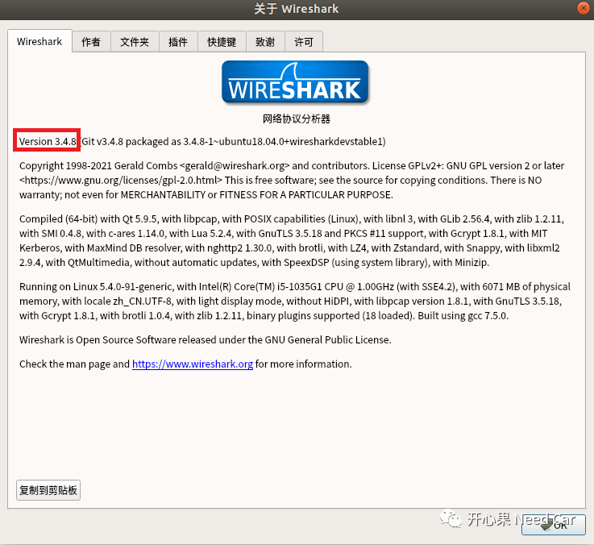
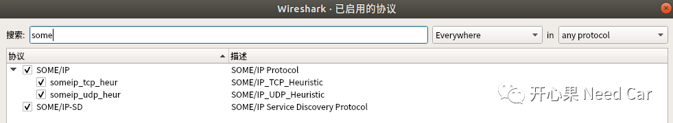

Wireshark作为一个网络抓包工具，在嵌入式以太网的开发工作中，使用频率自不必细说。"工欲善其事必先利其器"，如果你的工作涉及分析SOME/IP，那就需要先给Wireshark安装SOME/IP插件，让其助你事半功倍。如下在Ubuntu中安装Wireshark及SOME/IP插件（基于开源VSOME/IP开发，免费）。

Wireshark安装
Wireshark安装网上给出了很多方法，大多基于老版本使用lua脚本解析SOME/IP。在这里注意：需要安装版本大于3，因为大于3的wireshark版本可以直接启动SOME/IP的解析，无需额外加载解析SOME/IP的*.lua脚本。
安装指令如下所示：
|
安装过程如有提示，直接YES（简单直接）。安装成功后的版本确认：
（1）帮助->关于Wireshark

（2）如下所示（Version 3.4.8 ）


SOME/IP插件启用步骤
（1）分析->启用的协议...

（2）搜索关键字（如：Some）,勾选SOME/IP及SOME/IP-SD

（3）实际解析效果如下所示

如果还没有解析SOME/IP，重启Wireshark。